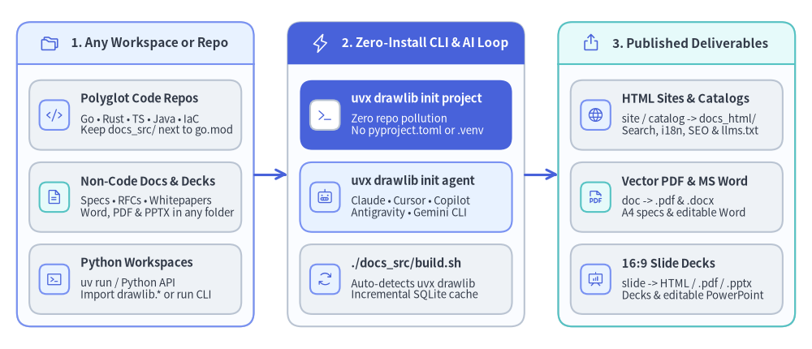
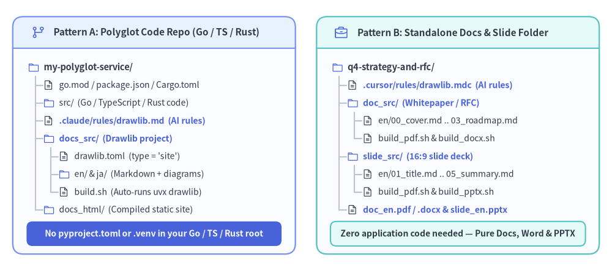

uvx によるゼロインストール活用（他言語・非開発プロジェクト）
Drawlib の描画エンジン自体は Python で実装されていますが、Drawlib で図解・ドキュメントサイト・ホワイトペーパー・スライドデッキを管理するために Python プロジェクト（さらにはソフトウェア開発リポジトリ）である必要は一切ありません。uvx drawlib を使えば、ワークスペースに pyproject.toml や .venv を追加することなく、Go・Rust・TypeScript・Java・C++・Terraform などの他言語リポジトリはもちろん、企画書・仕様書・プレゼン資料専用の非開発フォルダでも即座にマルチフォーマットの図解ドキュメント管理を始められます。

Source Code
from drawlib.canvas import save, setup
from drawlib.icons import phosphor
from drawlib.lines import line
from drawlib.smartarts import CardList, Panel
from drawlib.styles import Styles
setup(width=144, height=62)
body_frame = Styles.Neutral.patch(shape_fill_color=(250, 252, 255))
# 1. Left Panel: 3 Entry Contexts (Polyglot, Non-Code, Python)
p_in = Panel(
"1. Any Workspace or Repo",
style=body_frame,
header_style=Styles.PrimaryNeutral,
text_style=Styles.DarkBold.patch(text_size=11.0),
icon=phosphor.folders,
icon_style=Styles.Primary,
header_height=7.5,
)
p_in.draw(xy=(3.0, 4.0), width=42.0, height=54.0)
in_cards = CardList(
style=Styles.Neutral,
text_style=Styles.DarkBold.patch(text_size=10.5),
description_style=Styles.Dark.patch(text_size=9.5),
badge_style=Styles.PrimaryNeutral,
icon_style=Styles.Primary,
spacing=2.2,
)
in_cards.add(
"Polyglot Code Repos",
"Go • Rust • TS • Java • IaC\nKeep docs_src/ next to go.mod",
icon=phosphor.code,
)
in_cards.add(
"Non-Code Docs & Decks",
"Specs • RFCs • Whitepapers\nWord, PDF & PPTX in any folder",
icon=phosphor.file_text,
badge_style=Styles.SecondaryNeutral,
)
in_cards.add(
"Python Workspaces",
"uv run / Python API\nImport drawlib.* or run CLI",
icon=phosphor.terminal_window,
)
in_cards.draw(xy=(5.2, 6.2), width=37.6, height=41.5)
# 2. Center Panel: Zero-Install uvx + AI Agent Engine
p_eng = Panel(
"2. Zero-Install CLI & AI Loop",
style=body_frame,
header_style=Styles.PrimaryFlat,
text_style=Styles.WhiteBold.patch(text_size=11.0),
icon=phosphor.lightning,
icon_style=Styles.White,
header_height=7.5,
)
p_eng.draw(xy=(51.0, 4.0), width=42.0, height=54.0)
eng_cards = CardList(
style=Styles.Neutral,
text_style=Styles.DarkBold.patch(text_size=10.5),
description_style=Styles.Dark.patch(text_size=9.5),
badge_style=Styles.PrimaryNeutral,
icon_style=Styles.Primary,
spacing=2.2,
)
eng_cards.add(
"uvx drawlib init project",
"Zero repo pollution\nNo pyproject.toml or .venv",
icon=phosphor.terminal,
style=Styles.PrimaryFlat,
text_style=Styles.WhiteBold.patch(text_size=10.5),
description_style=Styles.White.patch(text_size=9.5),
badge_style=Styles.Neutral.patch(shape_fill_color=(255, 255, 255)),
icon_style=Styles.Primary,
)
eng_cards.add(
"uvx drawlib init agent",
"Claude • Cursor • Copilot\nAntigravity • Gemini CLI",
icon=phosphor.robot,
style=Styles.PrimaryNeutral,
)
eng_cards.add(
"./docs_src/build.sh",
"Auto-detects uvx drawlib\nIncremental SQLite cache",
icon=phosphor.arrows_clockwise,
)
eng_cards.draw(xy=(53.2, 6.2), width=37.6, height=41.5)
# 3. Right Panel: Multi-Format Deliverables
p_out = Panel(
"3. Published Deliverables",
style=body_frame,
header_style=Styles.SecondaryNeutral,
text_style=Styles.DarkBold.patch(text_size=11.0),
icon=phosphor.export,
icon_style=Styles.Primary,
header_height=7.5,
)
p_out.draw(xy=(99.0, 4.0), width=42.0, height=54.0)
out_cards = CardList(
style=Styles.Neutral,
text_style=Styles.DarkBold.patch(text_size=10.5),
description_style=Styles.Dark.patch(text_size=9.5),
badge_style=Styles.PrimaryNeutral,
icon_style=Styles.Primary,
spacing=2.2,
)
out_cards.add(
"HTML Sites & Catalogs",
"site / catalog -> docs_html/\nSearch, i18n, SEO & llms.txt",
icon=phosphor.globe,
)
out_cards.add(
"Vector PDF & MS Word",
"doc -> .pdf & .docx\nA4 specs & editable Word",
icon=phosphor.file_pdf,
badge_style=Styles.SecondaryNeutral,
)
out_cards.add(
"16:9 Slide Decks",
"slide -> HTML / .pdf / .pptx\nDecks & editable PowerPoint",
icon=phosphor.presentation_chart,
)
out_cards.draw(xy=(101.2, 6.2), width=37.6, height=41.5)
# Horizontal connectors between panels
line((45.0, 31.0), (51.0, 31.0), arrow_head="->", style=Styles.PrimaryBold.patch(line_width=2.2))
line((93.0, 31.0), (99.0, 31.0), arrow_head="->", style=Styles.PrimaryBold.patch(line_width=2.2))
save()
1. なぜ uvx drawlib なら Python 環境不要で使えるのか
uv は単一の高速なネイティブバイナリ（brew install uv、curl、または winget で導入可能）であり、Node.js の npx に相当する一時ツール実行ランナー uvx を標準搭載しています。
- リポジトリルートを一切汚さない（Zero Repo Pollution）:
uvx drawlib ...を実行すると、ユーザー領域のキャッシュ（~/.cache/uv）内に分離された Python>=3.11と Drawlib 環境が自動構築されます。プロジェクトのルートディレクトリにpyproject.toml、uv.lock、requirements.txt、.venv/を置く必要は一切ありません。 build.shによる自動コマンド検出:drawlib init projectが生成するすべてのスクリプト（build.sh、build_html.sh、build_pdf.sh、build_docx.sh、build_pptx.sh、serve.sh）は、uv run drawlibやグローバルなdrawlibの有無を検査し、未設定環境では自動的にuvx drawlibへフォールバックします。一度初期化すれば、チームメンバーや CI 環境は./docs_src/build.shを実行するだけです。- すべての機能がフル稼働:
uvx drawlibでも、全 34 アイコンスイート、自動レイアウトグラフ、SmartArts、定量チャート、ヘッドレス Chromium による A4 PDF 出力、ネイティブ MS Word（.docx）出力、および MS PowerPoint（.pptx）出力まで、すべての機能が制限なく動作します。
| 実行モード | コマンド接頭辞 | 最適な利用シーン | リポジトリルートへの追加ファイル |
|---|---|---|---|
ゼロインストール (uvx) |
uvx drawlib ... |
Go・Rust・TS・Java・Terraform リポジトリ、30秒でのお試し評価 | なし（Python 設定ファイル 0 個） |
グローバル常駐 (uv tool) |
drawlib ... |
テクニカルライター・PM・アーキテクト など、多数のフォルダで日常的に文書やスライドを作る場合 | なし（マシンごとに初回 1 回 uv tool install drawlib） |
Python プロジェクト (uv run) |
uv run drawlib ... |
Python ライブラリ／アプリ開発、または IDE 補完を効かせて drawlib.* を直接 import する場合 |
pyproject.toml & uv.lock |
2. Python プロジェクト以外の 2 大活用パターン
他言語で書かれたマイクロサービスのリポジトリに組み込む場合でも、空のフォルダで企画書やプレゼン資料を執筆する場合でも、ディレクトリ構成はシンプルかつ自己完結に保たれます。

Source Code
from drawlib.canvas import save, setup
from drawlib.icons import phosphor
from drawlib.shapes import rectangle
from drawlib.smartarts import Panel, TreeNode
from drawlib.styles import Colors, Styles
setup(width=144, height=64)
TreeNode.register_drawing_item(
name="dir",
location="before",
padding_width=3.8,
function=phosphor.folder,
style=Styles.Primary.patch(icon_color=Colors.Primary),
args={"width": 2.8},
)
TreeNode.register_drawing_item(
name="file",
location="before",
padding_width=3.8,
function=phosphor.file_text,
style=Styles.Dark,
args={"width": 2.6},
)
root_kwargs = {
"text_style": Styles.DarkBold.patch(text_size=10.5),
"line_style": Styles.Neutral,
"line_horizontal_margin": 1.8,
"line_horizontal_length": 2.6,
"line_vertical_margin": 4.2,
}
item_style = Styles.Dark.patch(text_size=10.0)
hl_style = Styles.PrimaryBold.patch(text_size=10.0)
# Left Panel: Pattern A — Polyglot Code Repository
p_left = Panel(
"Pattern A: Polyglot Code Repo (Go / TS / Rust)",
style=Styles.Neutral.patch(shape_fill_color=(250, 252, 255)),
header_style=Styles.PrimaryNeutral,
text_style=Styles.DarkBold.patch(text_size=11.0),
icon=phosphor.git_branch,
icon_style=Styles.Primary,
header_height=7.5,
)
p_left.draw(xy=(3.0, 4.0), width=66.5, height=56.0)
t_poly = TreeNode("my-polyglot-service/", **root_kwargs).set_drawing_item("dir")
t_poly.add("go.mod / package.json / Cargo.toml", text_style=item_style).set_drawing_item("file")
t_poly.add("src/ (Go / TypeScript / Rust code)", text_style=item_style).set_drawing_item("dir")
t_poly.add(".claude/rules/drawlib.md (AI rules)", text_style=hl_style).set_drawing_item("file")
t_docs = t_poly.add("docs_src/ (Drawlib project)", text_style=hl_style).set_drawing_item("dir")
t_docs.add("drawlib.toml (type = 'site')", text_style=item_style).set_drawing_item("file")
t_docs.add("en/ & ja/ (Markdown + diagrams)", text_style=item_style).set_drawing_item("dir")
t_docs.add("build.sh (Auto-runs uvx drawlib)", text_style=item_style).set_drawing_item("file")
t_poly.add("docs_html/ (Compiled static site)", text_style=item_style).set_drawing_item("dir")
t_poly.draw(xy=(6.5, 48.0))
rectangle(
(36.25, 8.8),
width=60.0,
height=5.8,
style=Styles.PrimaryFlat.patch(shape_r=1.4),
text="No pyproject.toml or .venv in your Go / TS / Rust root",
text_style=Styles.WhiteBold.patch(text_size=10.0),
)
# Right Panel: Pattern B — Non-Code Documentation & Slide Workspace
p_right = Panel(
"Pattern B: Standalone Docs & Slide Folder",
style=Styles.Neutral.patch(shape_fill_color=(250, 252, 255)),
header_style=Styles.SecondaryNeutral,
text_style=Styles.DarkBold.patch(text_size=11.0),
icon=phosphor.briefcase,
icon_style=Styles.Primary,
header_height=7.5,
)
p_right.draw(xy=(74.5, 4.0), width=66.5, height=56.0)
t_doc = TreeNode("q4-strategy-and-rfc/", **root_kwargs).set_drawing_item("dir")
t_doc.add(".cursor/rules/drawlib.mdc (AI rules)", text_style=hl_style).set_drawing_item("file")
t_dsrc = t_doc.add("doc_src/ (Whitepaper / RFC)", text_style=hl_style).set_drawing_item("dir")
t_dsrc.add("en/00_cover.md .. 03_roadmap.md", text_style=item_style).set_drawing_item("file")
t_dsrc.add("build_pdf.sh & build_docx.sh", text_style=item_style).set_drawing_item("file")
t_ssrc = t_doc.add("slide_src/ (16:9 slide deck)", text_style=hl_style).set_drawing_item("dir")
t_ssrc.add("en/01_title.md .. 05_summary.md", text_style=item_style).set_drawing_item("file")
t_ssrc.add("build_pdf.sh & build_pptx.sh", text_style=item_style).set_drawing_item("file")
t_doc.add("doc_en.pdf / .docx & slide_en.pptx", text_style=hl_style).set_drawing_item("file")
t_doc.draw(xy=(78.0, 48.0))
rectangle(
(107.75, 8.8),
width=60.0,
height=5.8,
style=Styles.SecondaryNeutral.patch(shape_r=1.4, shape_line_width=1.5),
text="Zero application code needed — Pure Docs, Word & PPTX",
text_style=Styles.DarkBold.patch(text_size=10.0),
)
save()
2.1 パターン A：Go・Rust・TypeScript・Java・Terraform リポジトリでの設計書管理
Go・Rust・TypeScript（Next.js）・Java・Terraform などでサービスを開発している際、アーキテクチャ図を外部の GUI 作図ツールに置くと、プルリクエストでのコード変更と図解がすぐに乖離してしまいます。uvx drawlib を使えば、既存のビルドツールチェーン（go.mod や package.json）に一切手を加えることなく、リポジトリ内の Markdown に実行可能な図解ブロックを直接埋め込めます。
# 既存の Go / Rust / TypeScript / Java / Terraform リポジトリのルートで実行:
$ uvx drawlib init project site -l en,ja
$ uvx drawlib init agent claude cursor
# HTML サイト・GitHub Markdown・埋め込み図解を一括ビルド（自動で uvx drawlib を使用）:
$ ./docs_src/build.sh
# ローカルプレビューサーバーの起動、またはヘッドレスでのリンク切れ検証:
$ ./docs_src/serve.sh
$ uvx drawlib serve docs_html/ --check
- 他言語コードと AI エージェントの相乗効果:
uvx drawlib init agent claude（またはcursor、antigravity、copilot）を実行しておけば、AI コーディングエージェントがリポジトリ内の Go 構造体、Rust トレイト、TypeScript 型定義、OpenAPI スキーマ、Terraform.tfモジュールを読み取り、docs_src/内に正確なArchitectureDiagram・SequenceDiagram・ERDiagram・ClassDiagramを自律的に生成・更新します。 - ゼロコンフィグの GitHub Actions CI: CI/CD でも
astral-sh/setup-uvを 1 行追加するだけで動作し、リポジトリに Python の依存管理ファイルを置く必要はありません。
# .github/workflows/docs.yml
name: Build Illustrated Docs
on: [push, pull_request]
permissions:
contents: read
jobs:
docs:
runs-on: ubuntu-latest
steps:
- uses: actions/checkout@v4
- uses: astral-sh/setup-uv@v5
- name: Build documentation & verify links
run: |
./docs_src/build.sh
uvx drawlib serve docs_html/ --check
2.2 パターン B：開発プロジェクト以外（単体の仕様書・ホワイトペーパー・提案書・プレゼンスライド）
Drawlib は、アプリケーションのソースコードが一切存在しない文書作成プロジェクト——たとえば要件定義書（PRD）、セキュリティ障害報告書（ポストモーテム）、技術ホワイトペーパー、顧客向け提案書、カンファレンス登壇スライドなどの作成においても強力な威力を発揮します。
PowerPoint 上で手作業で箱を並べたり Word にスクリーンショットを貼り付けたりする代わりに、空のフォルダを作って uvx で doc・slide・catalog プロジェクトを初期化すれば、本文の執筆から図解・チャートのレイアウトまで AI エージェントと一気通貫で進められます。
# ホワイトペーパー・提案書・プレゼン資料用の専用フォルダを作成
$ mkdir security-postmortem && cd security-postmortem
# 1. リニア文書プロジェクトを初期化（HTML + A4 ベクター PDF + MS Word .docx 対応）
$ uvx drawlib init project doc -l en,ja -s google
# 2. または 16:9 プレゼンスライドデッキを初期化（HTML + PDF + MS PowerPoint .pptx 対応）
$ uvx drawlib init project slide -l en,ja -s google
# 3. IDE / CLI の AI エージェントが図解とスライドを自律作成できるようルールを初期化
$ uvx drawlib init agent claude
# 4. 印刷用 PDF、編集可能な MS Word (.docx)、編集可能な PowerPoint (.pptx) を出力
$ ./doc_src/build.sh
$ ./doc_src/build_docx.sh
$ ./slide_src/build.sh
$ ./slide_src/build_pptx.sh
| プロジェクト種別 | 初期化コマンド (uvx) |
非開発プロジェクトでの主な用途 | 生成される成果物 |
|---|---|---|---|
リニア文書 (doc) |
uvx drawlib init project doc |
ホワイトペーパー、RFC、監査レポート、提案書、運用マニュアル | 統合 HTML、A4 ベクター PDF (*.pdf)、編集可能な MS Word (*.docx) |
16:9 スライド (slide) |
uvx drawlib init project slide |
経営層向け報告、障害ポストモーテム、技術登壇資料、顧客ピッチ | 16:9 HTML スライド、16:9 PDF、編集可能な MS PowerPoint (*.pptx) |
マルチページサイト (site) |
uvx drawlib init project site |
チームハンドブック、プロダクトガイド、社内ナレッジポータル | 検索・多言語切替・SEO・llms.txt 付きの静的 HTML サイト |
カタログ (catalog) |
uvx drawlib init project catalog |
サービス台帳、データ辞書、セキュリティ統制カタログ | カード索引・追従目次・検索付きのカタログサイト |
単体図版 (images) |
uvx drawlib init project images |
技術ブログ挿絵、論文・記事用の図表、SNS / OGP バナー画像 | 高解像度 PNG・SVG・PDF および APNG / WebP アニメーション |
Tip — 日常的に多数のフォルダで執筆する場合はグローバル導入も便利: 企画書やスライドを毎週さまざまなフォルダで作成する場合は、一度だけ
uv tool install drawlibを実行しておくと、分離されたツール環境のままdrawlibコマンドに常時パスが通り、各フォルダをクリーンに保ったままさらに軽快に利用できます。